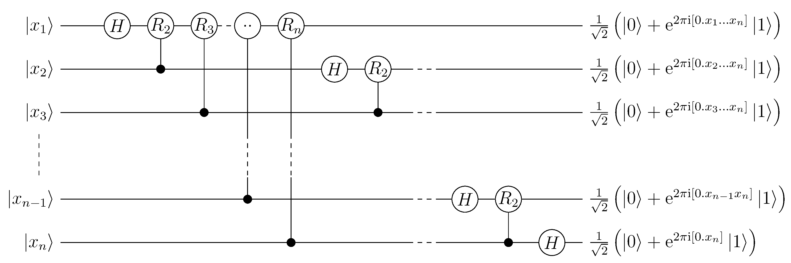

A Transformada Quântica de Fourier (QFT) é um dos algoritmos quânticos fundamentais, servindo como componente essencial para diversos outros algoritmos quânticos, incluindo o famoso algoritmo de Shor para fatoração. A QFT é a versão quântica da Transformada Discreta de Fourier e oferece uma aceleração exponencial em relação à sua contraparte clássica.
Transformada Quântica de Fourier (QFT)#
Seja um estado quântico \(\ket{\psi} = \sum_{j=0}^{N-1} x_j \ket{j}\) representado na base computacional, onde \(N = 2^n\) e \(n\) é o número de qubits. A Transformada Quântica de Fourier aplica a seguinte transformação:
onde os coeficientes \(y_k\) são dados por:
Algoritmo Clássico#
Agora considere o problema de calcular a Transformada de Fourier no contexto clássico. A seguir serão vistas brevemente as abordagens clássicas para este problema.
Transformada Discreta de Fourier (DFT)#
A abordagem mais direta para calcular a Transformada Discreta de Fourier (DFT) classicamente segue exatamente a definição matemática. Para um vetor de entrada \(\mathbf{x} = [x_0, x_1, \ldots, x_{N-1}]\), cada coeficiente de saída \(y_k\) é calculado individualmente através da fórmula:
Esta abordagem é determinística - para uma mesma entrada, produz sempre a mesma saída - e não faz uso de recursos probabilísticos. No entanto, sua implementação prática requer o cálculo explícito de cada termo da soma.
Exemplo para N = 4#
Para um vetor com 4 elementos \([x_0, x_1, x_2, x_3]\), os cálculos necessários são:
onde \(\omega = e^{2\pi i / 4} = i\) é uma raiz primitiva da unidade.
Complexidade Computacional#
Para calcular todos os N coeficientes de saída:
Multiplicações complexas: \(N \times N = N^2\)
Adições complexas: \(N \times (N-1) = N^2 - N\)
Total de operações: \(O(N^2)\)
Esta complexidade quadrática torna a DFT direta computacionalmente inviável para valores grandes de N, pois o número de operações cresce rapidamente.
Transformada Rápida de Fourier (FFT)#
Uma abordagem mais sofisticada é o algoritmo FFT (Fast Fourier Transform), que explora a estrutura de simetria e periodicidade das raízes complexas da unidade. O algoritmo mais conhecido é o de Cooley-Tukey, que utiliza uma estratégia de divisão e conquista.
Estratégia do Algoritmo#
O algoritmo FFT baseia-se na observação de que uma DFT de tamanho N pode ser decomposta em DFTs menores:
Decomposição Radix-2:
Separar o vetor original em elementos de índice par e ímpar
Calcular recursivamente a FFT para cada metade
Combinar os resultados usando operações elementares
Matematicamente, para N par:
Exemplo Prático para N = 8#
Primeiro nível de recursão:
Subproblema par: \([x_0, x_2, x_4, x_6]\) → FFT de tamanho 4
Subproblema ímpar: \([x_1, x_3, x_5, x_7]\) → FFT de tamanho 4
Segundo nível de recursão:
Pares dos pares: \([x_0, x_4]\) → FFT de tamanho 2
Ímpares dos pares: \([x_2, x_6]\) → FFT de tamanho 2
Pares dos ímpares: \([x_1, x_5]\) → FFT de tamanho 2
Ímpares dos ímpares: \([x_3, x_7]\) → FFT de tamanho 2
Operações de combinação: Em cada nível, as DFTs menores são combinadas usando operações “borboleta” que envolvem multiplicações por fatores de rotação (twiddle factors).
Complexidade da FFT#
Número de níveis recursivos: \(\log_2 N = n\)
Operações por nível: \(N\) operações (combinações borboleta)
Total de operações: \(O(N \log N) = O(2^n \cdot n)\)
Esta complexidade representa uma melhoria significativa em relação à abordagem direta, mas ainda apresenta crescimento superlinear com o tamanho do problema.
A análise da abordagem clássica fornece o contexto necessário para apreciar as vantagens da implementação quântica da Transformada de Fourier, que será discutida a seguir.
Algoritmo da Transformada Quântica de Fourier (QFT)#
Para implementar a Transformada Quântica de Fourier, precisamos de um circuito quântico que realize a transformação unitária correspondente. A QFT atua sobre estados da base computacional aplicando a seguinte transformação:
onde \(N = 2^n\) e \(j, k \in \{0, 1, \dots, N-1\}\).
Circuito Quântico da QFT#
O algoritmo quântico para a Transformada de Fourier é implementado através de um circuito composto por portas Hadamard e portas de rotação controlada. O procedimento para \(n\) qubits é:
Procedimento:
onde \(R_k^m\) representa uma porta de rotação \(R_k\) controlada pelo qubit \(m\), com: $\( R_k = \begin{bmatrix} 1 & 0 \\ 0 & e^{2\pi i / 2^k} \end{bmatrix} \)$
Circuito
Notação expandida:

Análise detalhada do algoritmo:
Estado inicial: \(\ket{\psi_0} = \ket{j_1 j_2 \cdots j_n} = \ket{j}\)
Aplicamos Hadamard no primeiro qubit seguido de rotações controladas:
onde \([0.j_1 j_2 \cdots j_n]\) representa a fração binária \(j_1/2 + j_2/4 + \cdots + j_n/2^n\).
Operações no qubit 2:
Continuando este processo para todos os qubits:
Estado final antes dos SWAPs:
Etapa n+1 - Aplicação dos SWAPs: Para obter a ordem correta dos qubits na representação binária, aplicamos portas SWAP entre qubits simétricos:
O estado final é exatamente:
Comparação de Desempenho#
A tabela abaixo traz a comparação entre o desempenho dos algoritmos clássicos e quântico para o cálculo da Transformada de Fourier:
Simulação do algorítimo da Transformada Quântica de Fourier#
Para simular o algorítimo QFT usaremos a línguagem Ket de computação quântica, para isso precisamos ter ela instalada, caso não possua o pacote instalado rode o seguinte código:
pip install ket-lang
Com a biblioteca instalada, importa-se para ser usada dentro do seu código:
from ket import *
from math import pi
A Transformada Quântica de Fourier (QFT) é crucial para algoritmos como o de Shor. Ela mapeia estados da codificação de base computacional para um domínio de frequência, onde a informação é codificada nas fases relativas dos qubits.
def qft(qubits, do_swap: bool = True):
if len(qubits) == 1:
H(qubits)
else:
*init, last = qubits
H(last)
for i, ctrl_qubit in enumerate(reversed(init)):
with control(ctrl_qubit):
PHASE(pi / 2 ** (i + 1), last)
qft(init, do_swap=False)
if do_swap:
size = len(qubits)
for i in range(size // 2):
SWAP(qubits[i], qubits[size - i - 1])
Transformada Quântica de Fourier Inversa (IQFT)#
A Transformada Quântica de Fourier Inversa (IQFT - Inverse Quantum Fourier Transform) é a operação unitária que realiza a transformação inversa exata da Transformada Quântica de Fourier (QFT). Enquanto a QFT codifica informações da base computacional para a base de Fourier, a IQFT decodifica informações da base de Fourier de volta para a base computacional.
A IQFT é exatamente o operador adjunto da QFT:
Simulação do algorítimo da Transformada Quântica de Fourier Inversa#
Para simular o algorítimo IQFT usaremos a línguagem Ket de computação quântica, para isso precisamos ter ela instalada, caso não possua o pacote instalado rode o seguinte código:
pip install ket-lang
Como demonstrado anteriormente, a Transformada Quântica de Fourier Inversa é o operador adjunto da QFT. O ket nos permite descobrir o operador adjunto de uma porta lógica, exceto as operações de medida, com a função adj(), como demonstrado abaixo.
def iqft(qubits):
adj(qft)(qubits)